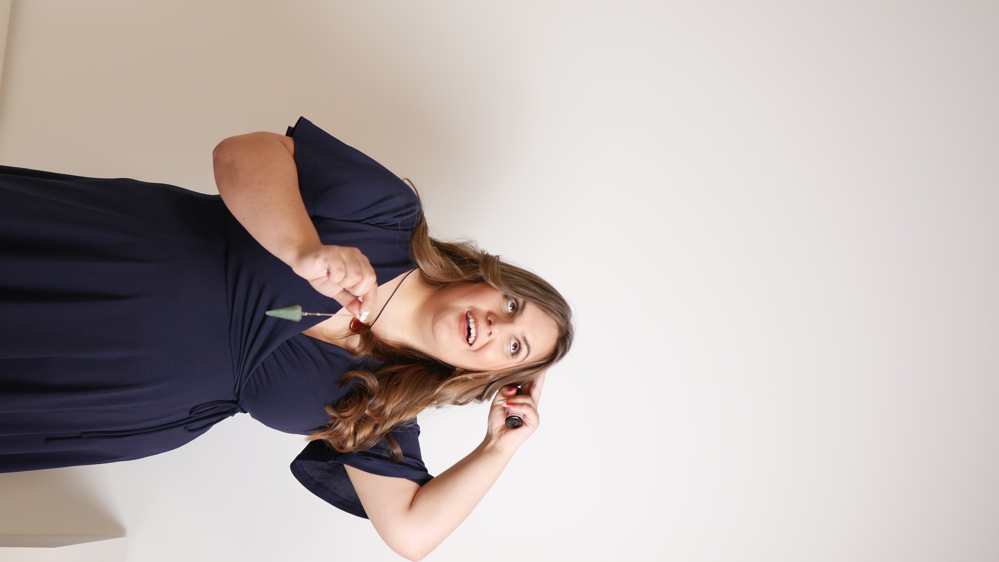

No llegué aquí por casualidad. Llegué porque he vivido lo que acompaño y he trabajado lo que ordeno.
Soy Verónica Salamanca. Mi trabajo está en el punto donde se cruzan empresa, emoción y estructura. Y precisamente ahí está mi diferencial.
Durante años he trabajado en consultoría, administración, coordinación operativa y prevención. A la vez, he recorrido un camino profundo en organización personal, gestión emocional y acompañamiento familiar. No son dos mundos separados. Son dos formas de leer lo que sostiene —o rompe— la vida y el trabajo.
Mi recorrido no nace de la teoría. Nace de la práctica real.
ADE
Base sólida en empresa, estructura y visión de negocio.
Técnico PRL
Prevención entendida no solo como cumplimiento, sino como sostén real.
+10 años
En consultoría, administración, coordinación y gestión empresarial.
+8 años
Dentro de empresa industrial, viviendo la operativa desde dentro.

He vivido la empresa desde dentro y desde fuera.
He trabajado en consultoría y también dentro de la realidad operativa de una empresa industrial. Eso me permite hablar con propiedad de administración, coordinación, prevención, PRL, CAE, documentación, tensión operativa y pérdida invisible de dinero.
No hablo desde PowerPoint. Hablo desde lo que realmente pasa cuando una empresa depende demasiado de pocas personas, cuando la prevención se convierte en papeleo o cuando nadie está uniendo las piezas que deberían estar coordinadas.
También he aprendido a leer lo que no siempre se ve.
Mi camino no se quedó en la empresa. También me llevó a profundizar en la organización interna, la gestión emocional, el cuerpo, la energía y la forma en la que sostenemos procesos complejos cuando la vida cambia.
Organización personal
Cómo sostener el día a día sin romperte por dentro.
Gestión emocional
Cómo acompañar procesos internos y familiares sin actuar solo desde la reacción.
Energía y presencia
Cómo crear estructura desde dentro para que lo externo no te arrastre.
No divido mi recorrido en piezas inconexas. Lo he convertido en criterio.
Lo técnico me da estructura. Lo humano me da profundidad. Y la experiencia me da claridad para saber qué necesita cada situación sin mezclar mensajes donde no toca.

PREVENZA, EQUILÍBRATE y ARQUENZA no son ocurrencias. Son consecuencia.
PREVENZA nace de mi recorrido en empresa, prevención y coordinación. EQUILÍBRATE nace de la necesidad de sostener la vida personal sin fractura. ARQUENZA nace de la comprensión de los procesos emocionales y familiares que dejan huella cuando no se acompañan bien.
Las tres líneas son distintas porque los contextos son distintos. Pero todas parten del mismo lugar: prevenir el caos antes de que sea más caro, más doloroso o más difícil de reparar.
Cómo se ha construido esta mirada
Base en ADE, prevención y años reales en consultoría, administración y coordinación operativa.
Formación y recorrido en organización personal, gestión emocional, energía y acompañamiento.
Una forma de trabajar que une criterio, presencia y lectura estructural de lo que está ocurriendo.
Trabajo con personas y empresas que quieren hacer las cosas bien, de verdad.
Si has llegado hasta aquí y sientes que mi forma de mirar tiene sentido para tu situación, escríbeme. Lo importante no es encajar en una etiqueta, sino saber si hay una vía real de trabajo útil para ti.